21 марта, среда
Всю ночь по пляжу бродили соотечественники, что, впрочем, не помешало выспаться. Утром искупались в море, приняли душ, постирались и попытались немного отремонтироваться. Я правил восьмерки на колесах, а Андрей ремонтировал флягодержатель славной фирмы тупик (Topeak Modula XL). К слову сказать редкостное дерьмо, но из-за отсутствия альтернативы у нас было по 3 штуки таких на каждого, и все они сломались в течение похода, несмотря на все ухищрения. Андрей потом поменял свои по гарантии на BBB FuelTank XL BBC, вроде как они надежнее. В итоге выехали только в 9.30 .
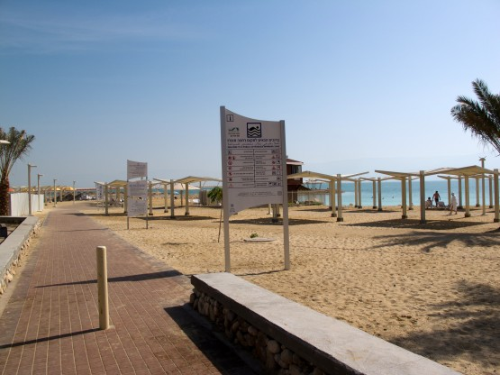
Пляж с бесплатным душем в Эйн Бокеке
Сделали небольшой крюк, чтобы набрать воды в мошаве Неот Хакикар.
Через некоторое время попадаем в красивое ущелье ручья. Ехать одно удовольствие, кругом красота. Полазили по Мучной пещере - интересная нора.
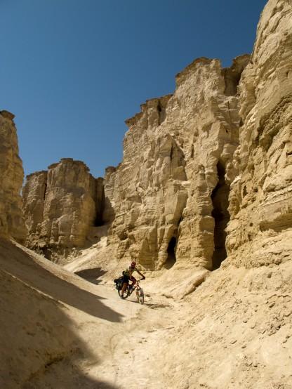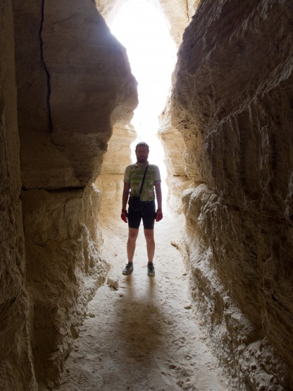
В русле ручья и вход в Мучную пещеру
По ручью поднялись к самому его началу. Затем относительно равнинный участок. Проехали под транспортером (конвейером) подающим поташ от Мертвого моря на завод.
Следующий ручей (нахль) Цын (Зин). Довольно сложный для езды участок. Сначала разбирая джипами дорога, потом участок крупных камней и несколько каменных завалов. Пришлось попрыгать с велосипедом в руках. Мое заднее колесо начало потихоньку травить, но я решил дотянуть до ночевки на подкачке. Наверное, зря, качать пришлось раз шесть. Уже в темноте добрались до места неземной красоты, где ручей еще не ушел в камни, и между отвесными высокими стенами в воде отражалась полная луна. Недолго думая разделись, и полезли купаться. Какое блаженство поплавать после дня жары и пустыни, особенно когда тебя окружает причудливое ущелье, а над головой светит полная луна. Вода в ручье оказалась солоноватая, но об этом мы уже знали из отчетов.
На ночевку встали под большим деревом Шита метрах в 100 ниже купальни. Немного опасались егерей, так как вся эта красота находится далеко в глубине национального парка, но все обошлось.
Дневной пробег 58, 4 км, набор высоты 765 метров
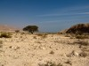 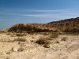 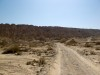 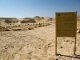 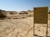 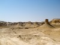 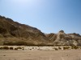 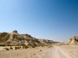 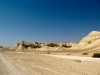 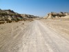 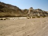 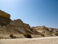 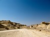 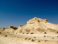 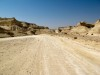 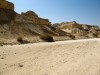 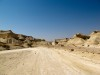 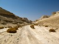 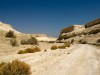 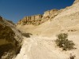 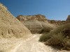 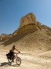 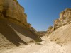 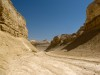 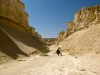  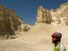 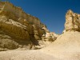 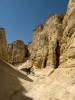 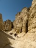 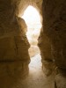 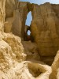 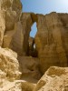 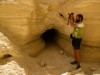 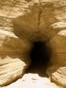 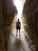 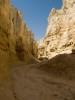 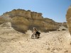 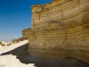 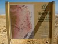 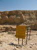 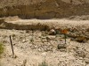 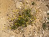 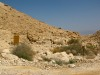 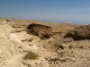 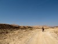 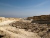
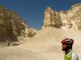 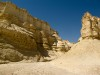 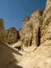 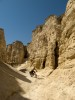 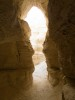 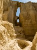 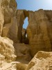 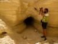 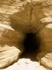 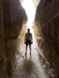 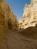 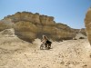 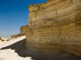 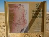 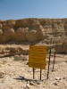 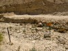 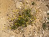 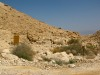 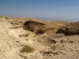 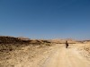 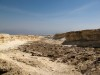